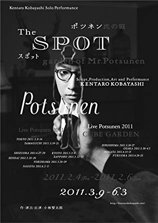
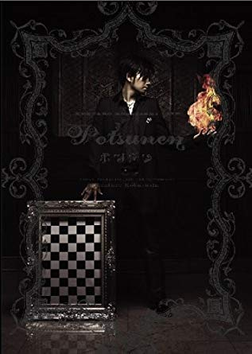

舞台は新しく国を建国することにした王様の話
世界一周を通して様々な国の文化を学ぶ。アナグラムをはじめ様々な面白いコントを見ることができるが一本を通して最初から全部見ると、最後のオチはほんとに達成感がヤバい！！！

小林賢太郎の一人公演(通称"ポツネン")の原点ともいえる舞台
現在の公演にも度々使われている[アナグラム]や[ハンドマイム]などもこの公演が初
ほかの公演とは違いどのコントから見ても楽しめるのもこの公演のいいところ